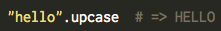
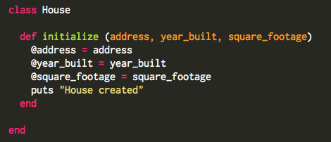
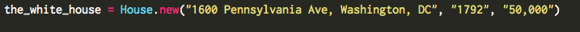
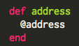
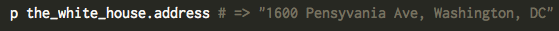

A Simple Example of Classes in Ruby
September 7, 2014
This week I've been completing challenges that use Ruby classes. In this post I'll talk about what a 'class' is and give an example of a class object. In Ruby, classes are objects that we can create new instances of and run certain methods. Classes can either be user-defined or built-in classes. For example String, Integer, and Float are Examples of Ruby classes that are built-in. As you may know we can run certain methods on these classes such as:

In this case "hello" is an instance of the string class and #upcase is a method we run on it. We can also create our own user-defined classes that allow us to create our own methods.
In the example below we create a house class which we can create certain instances of the 'House' class.

Note that when we define a class object it always begins with a capital letter. The initialize method is used when defining instance variables and passing arguments into the class object. Instance variables begin with an '@' symbol. Whenever you are creating an variable that can be applied to an instance of the class object, use an instance variable. In the example above, we created instance variables for the house address, year built, and square footage.
Remember, that the initialize method is run every time we create a new class object. To create an instance of the house object we use the following :

We define a variable for the new house object, set it equal to the class name, run the #new method, and pass attributes of the house object in parenthesis.
We can also create instance methods. Instance methods are methods that we can call on the class object. Methods of this kind are defined inside the class and intended for use by all instances of the class.

In our example, if we were to run the #address method on the 'the_white_house' object we would get:

Classes exist for the purpose of creating an instance of the class and running certain user-defined methods on them. As a object oriented language classes are a core component of Ruby.